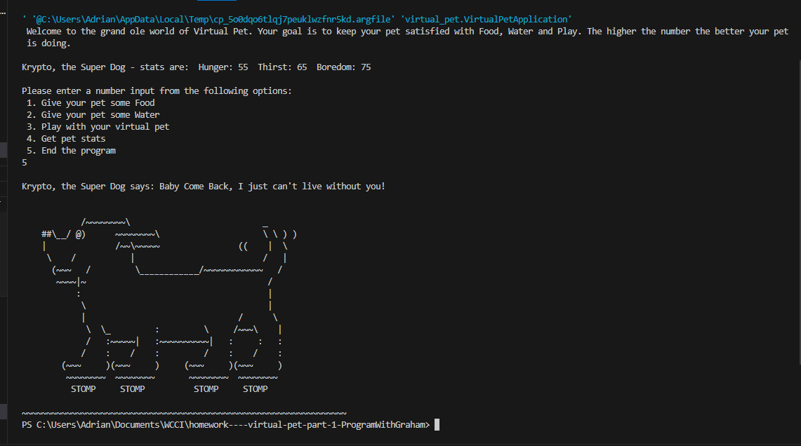
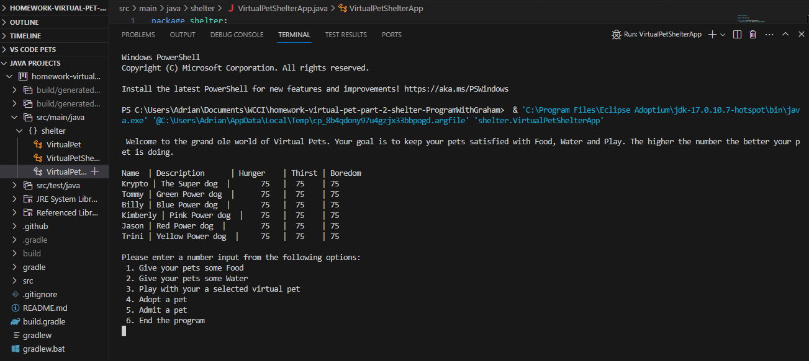
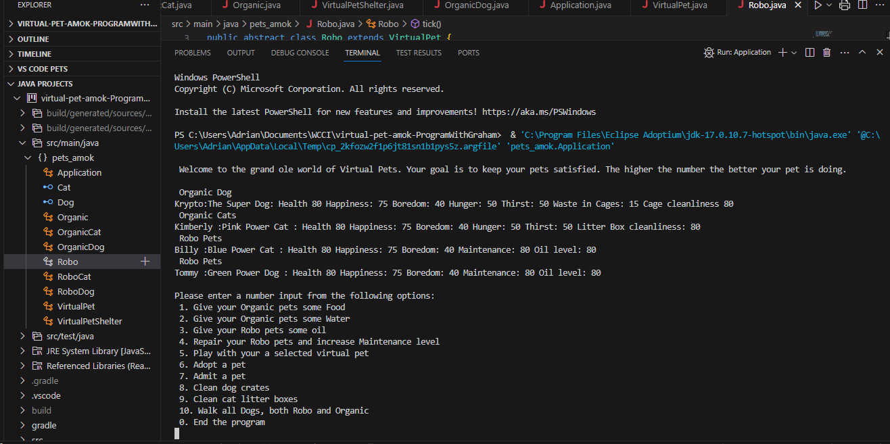

Virtual Pet
 Java based program where you have a
digital pet that must be taken care of. You are tasked with maintain
your pets level of Hunger,Thirst, and boredom. Each option taken (
except for getting pet stats and ending the program) will have
positive and negative affects on your pets different levels.
Google
Skills used: Java
Virtual Pet Shelter
 Virtual pet has been upgraded to
include a shelter so that you can house and handle more than one pet
at a time. You are tasked with maintain levels of Hunger,Thirst, and
boredom for all pets in the shelter. There are now options to have
your pets adopted (removed from the shelter), add new pets, and to
play with a specific pet of your choice.
Google
Skills used: Java
Pets Amok
 The next big phase of Virtual Pet
Shelter. Pets Amok!! There are now more specific types of pets like
Organic and Robo. Cats have been thrown into the mix as well. Not only
do you have to pay attention to Hunger,Thirst and Boredom levels for
each pet, now there new attributes added for each different type of
pet. BE-CAREFUL, to not let your levels go to low otherwise your pet
will lose happiness and even health. Can you keep up? Do you have what
it takes to manage so many different pets?
Google
Skills used: Java